Website, aplikasi web, alat digital yang berguna, dan eksperimen kreatif. AI membantu saya menjelajah dan membangun konsep dan arahan desain, tetapi keputusan akhir tetap 100% milik saya.
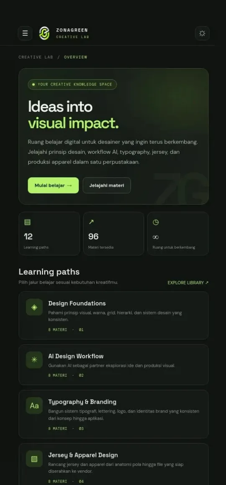
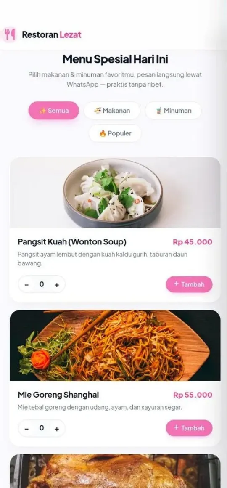
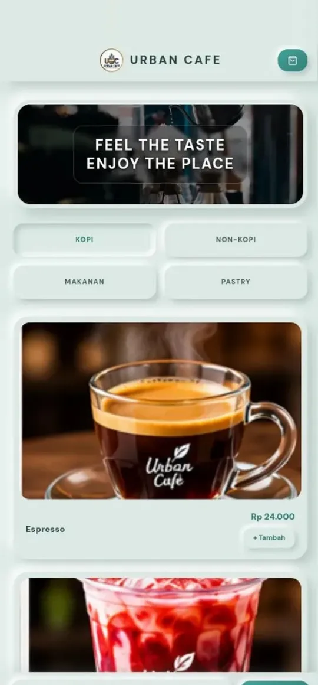
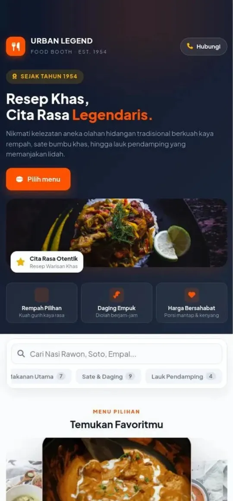
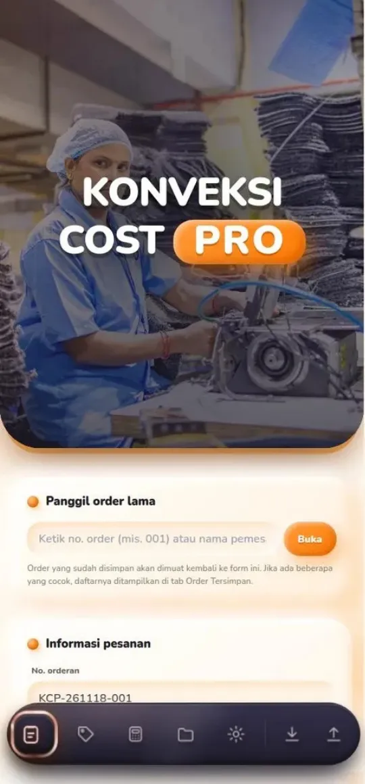
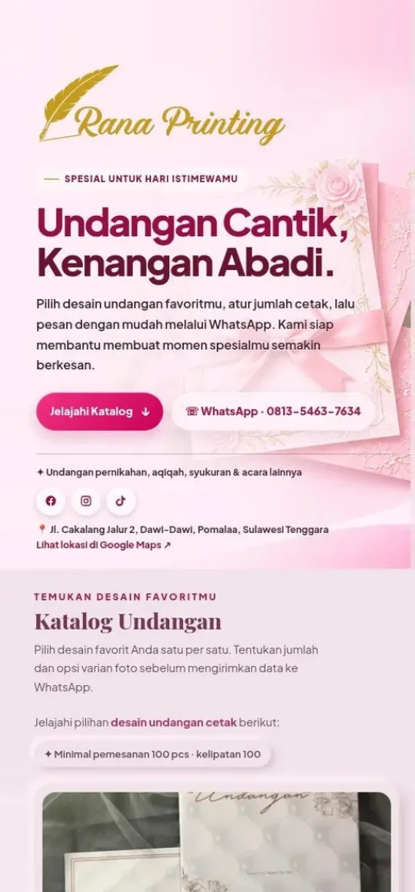
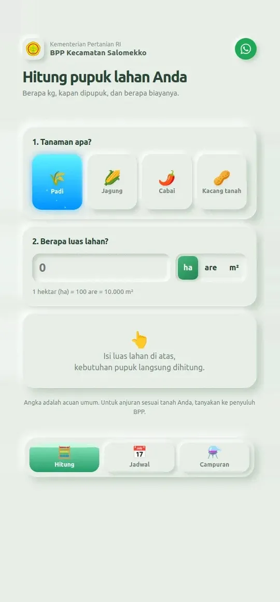
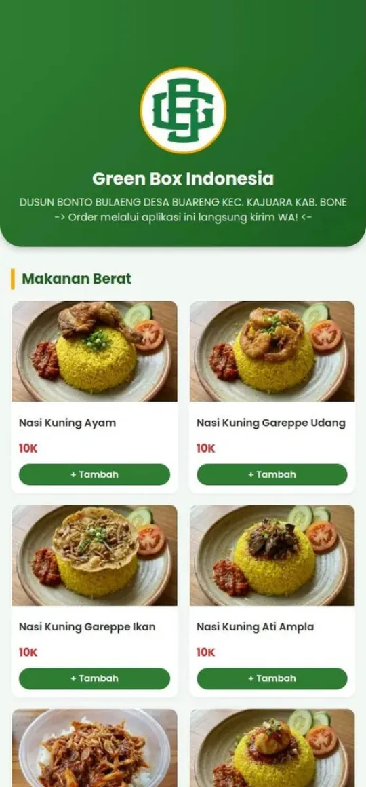
Kumpulan hal-hal yang saya buat, bagikan, dan jelajahi — terus belajar tanpa harus berpura-pura semuanya sudah selesai.
Navigation bar, glassmorphism, claymorphism, dan eksperimen antarmuka kecil.
JelajahiPrompt yang bisa dipakai ulang untuk eksplorasi desain, pengembangan visual, dan kerja kreatif sehari-hari.
JelajahiRuang belajar untuk desainer apparel, pembuat jersey, dan alur kerja produksi cetak.
JelajahiProyek web pribadi, prototipe, dan ide-ide yang sedang dibentuk.
JelajahiKomponen HTML, CSS, dan JavaScript yang bisa dicoba, dipelajari, disalin, dan dikembangkan. Setiap koleksi dilengkapi pratinjau dan kode sumber.
Buka perpustakaan kode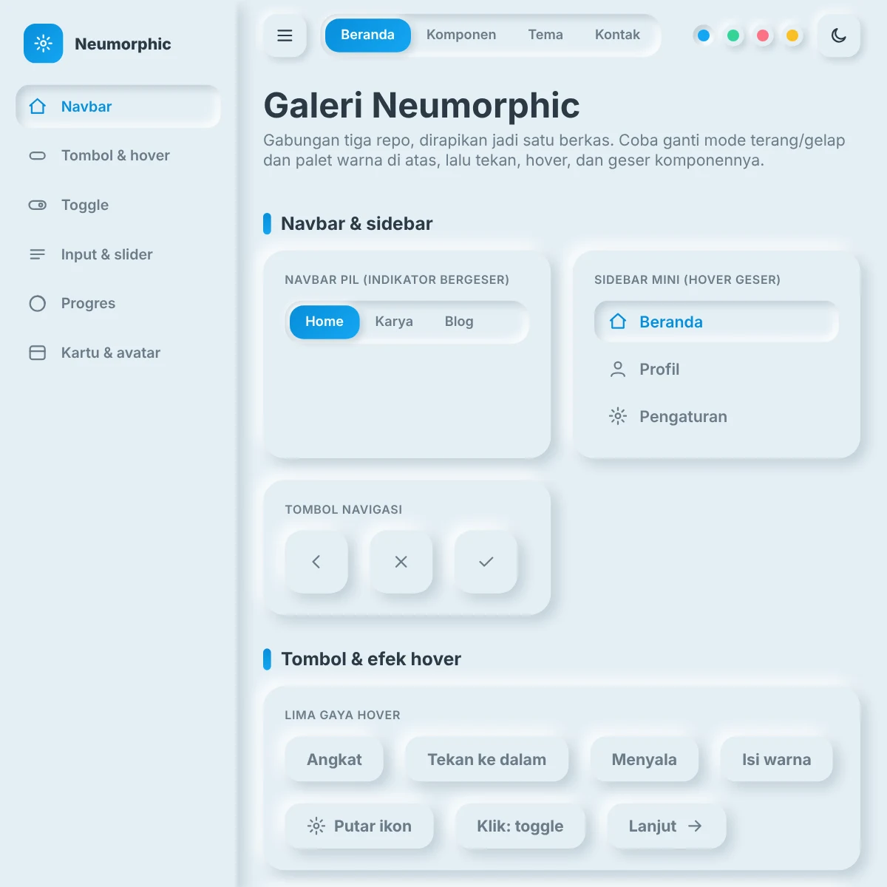
Tab bar beranimasi, liquid glass nav, floating dock, dan menu interaktif.
Pratinjau UI interaktifSidebar, kontrol, switch, tombol, panel kaca, dan antarmuka yang terasa nyata.
Glass · Soft UI · MotionEfek kursor, objek interaktif, layar login, dan contoh landing page.
HTML · CSS · JavaScriptKoleksi prompt AI untuk belajar, produktivitas, bisnis, pemrograman, desain, pembuatan visual, dan penyuntingan gambar. Buka koleksi, salin prompt yang dibutuhkan, lalu sesuaikan dengan konteksmu.
Buka perpustakaan prompt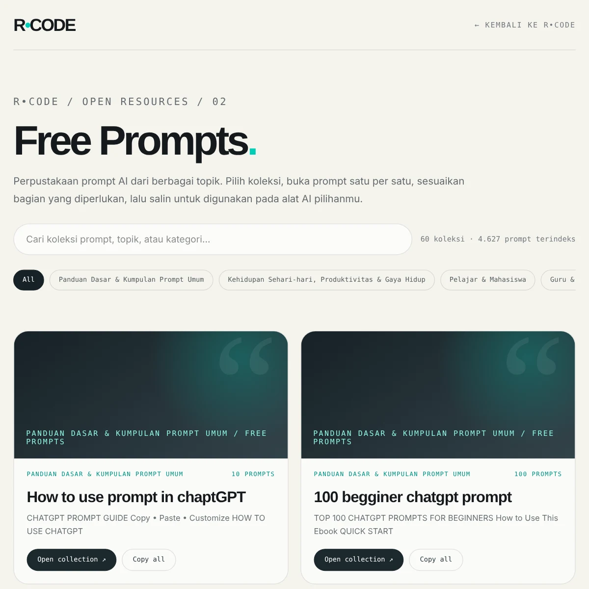
Prompt umum, produktivitas, perencanaan, gaya hidup, dan kreativitas.
Salin · Tempel · SesuaikanKoleksi untuk pelajar, guru, bisnis, kreator konten, programmer, dan desainer.
Ide menjadi instruksiPrompt untuk image generation, editing, pengubah gaya, miniatur, karakter, dan iklan.
Bayangkan · Sempurnakan · BuatBelajar • Berkarya • Produksi. Merek belajar mandiri dan ruang sumber daya digital untuk desainer apparel — terutama desainer jersey olahraga, pembuat apparel custom, serta operator DTF, sablon, dan sublimasi.
Buka ZonaGreen Creative Lab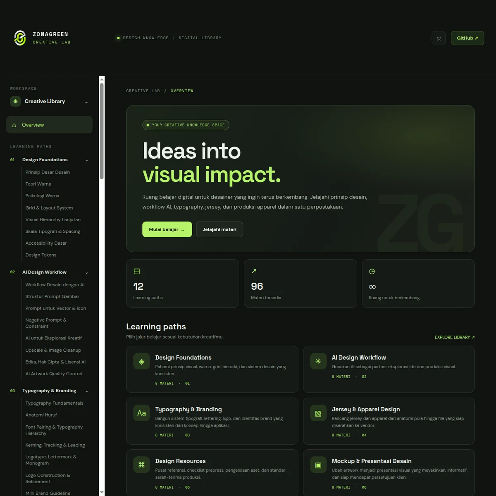
Web book interaktif tentang dasar jersey, alur desain, tipografi, revisi, dan file produksi akhir.
Konten sedang disiapkanPrompt apparel terstruktur, template badan dan panel jersey, serta toolkit kreatif yang bisa dipakai ulang.
Konten sedang disiapkanPemeriksaan praktis untuk resolusi, transparansi, warna, format file, DTF, sablon, dan sublimasi.
Konten sedang disiapkanCatatan tenang tentang prototipe, alat web kecil, studi antarmuka, dan ide yang masih dibentuk. Karya pilihan akan muncul di sini begitu siap dibagikan.
Lihat perpustakaan kode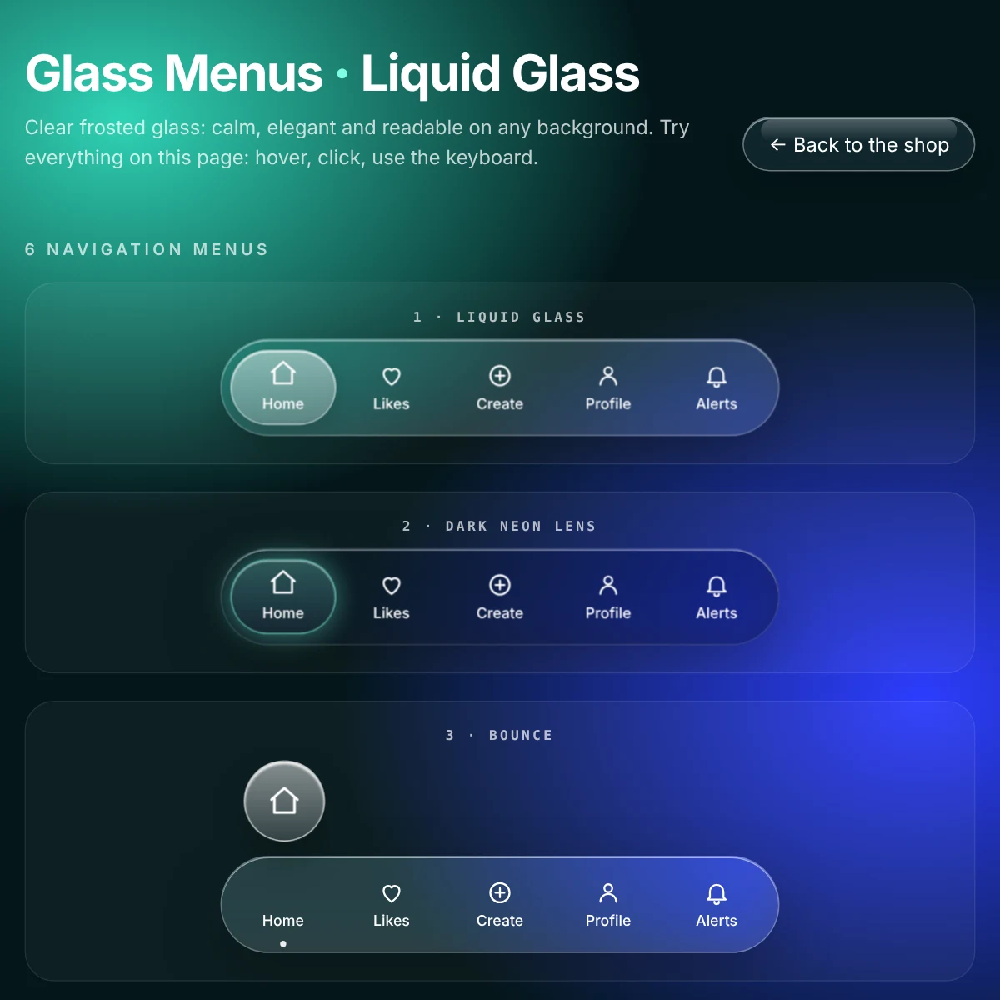
Website dan alat kecil yang dibuat untuk menyelesaikan kebutuhan sehari-hari tertentu.
Konten sedang disiapkanEksperimen navigasi, glassmorphism, claymorphism, dan gerak.
Konten sedang disiapkanApa yang berhasil, apa yang gagal, dan apa yang saya pelajari saat membangun.
Konten sedang disiapkanAI adalah alat. Ide, arah visual, dan keputusan akhir tetap di tangan saya sebagai desainer.
Saya Hadier Al Ghanie, desainer dan pengembang web independen dari Indonesia. R•CODE adalah ruang pribadi saya untuk mengubah ide menjadi website, aplikasi web kecil, komponen antarmuka yang berguna, dan sumber belajar.
Saya bekerja dengan AI sebagai asisten dalam prosesnya. Konsep, bahasa visual, struktur, dan hasil akhir saya yang tentukan. Saya lebih suka berbagi hal yang berguna secara tenang: kode gratis, prompt praktis, eksperimen, dan pelajaran di sepanjang jalan.
AI bisa menyarankan, menghasilkan, dan mempercepat. Saya yang bertanggung jawab atas brief, keputusan desain, pengecekan kualitas, dan hasil akhir.
Mencoba berbagai kemungkinan dengan bantuan AI untuk mempercepat eksplorasi.
Saya menentukan konsep, bahasa visual, dan struktur.
Merevisi, menguji, dan merapikan detail sampai terasa tepat.
Keputusan akhir dan kualitas hasil tetap menjadi tanggung jawab saya.
Punya ide, proyek, atau sekadar ingin menyapa? Kirim pesan — saya senang mendengarnya.
Chat WhatsApp